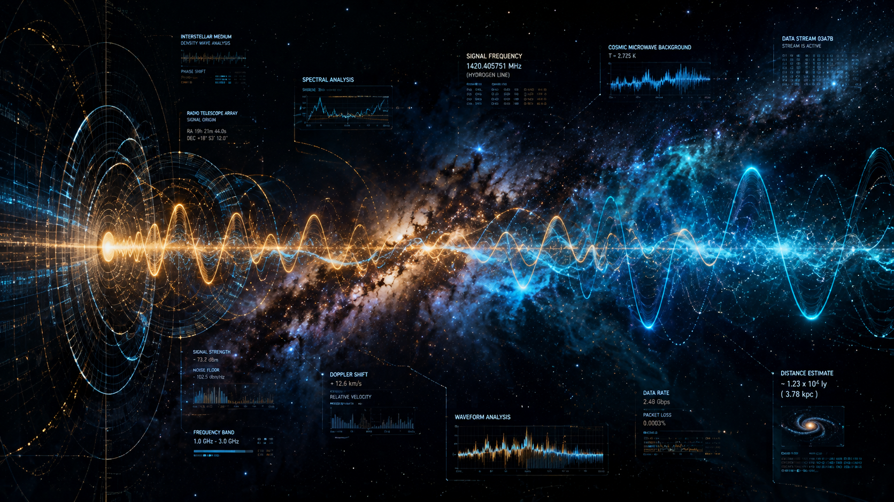

On the evening of August 15, 1977, astronomer Jerry Ehman was volunteering for the Search for Extraterrestrial Intelligence (SETI) project at Ohio State University's Big Ear radio telescope. As he reviewed computer printouts from the previous night's observation of deep space, his eyes caught a sequence of numbers and letters that made him grab a red pen and write a single word in the margin: "Wow!"
The 72-Second Anomaly
The signal lasted for exactly 72 seconds—the maximum amount of time the telescope could observe that specific sector of the sky before Earth's rotation moved it away. It was incredibly strong, narrow-band, and registered at a frequency of 1,420 megahertz.
This frequency is special in astrophysics. It is the emission frequency of neutral hydrogen, widely considered by scientists as the universal "watering hole"—the most logical frequency for an intelligent civilization across the galaxy to broadcast a signal because cosmic background noise is lowest there.

The Needle in a Cosmic Haystack
Why does this event remain one of modern science's greatest enduring mysteries? To understand why, consider a straightforward analogy.
The Simple Example: The Single Radio Broadcast in a Desert
Imagine you are driving across a massive, empty desert, scanning your car radio through a sea of pure, fuzzy static noise. Suddenly, for one minute and twelve seconds, you hear a crystal-clear, perfectly tuned musical note. You pull over, wait, and listen, but you never hear that note again on any frequency. Was it a glitch in your radio, a passing satellite, or a broadcast from somewhere out in the dunes?
That is precisely what happened with the Wow! Signal. Astronomers immediately pointed powerful telescopes back at the exact same region in the constellation Sagittarius. They listened for hours, days, and years, but the signal never repeated.
Scientific Theories and Natural Explanations
Over the decades, scientists have proposed numerous hypotheses to explain the anomaly without resorting to science fiction:
- Interstellar Scintillation: A natural cosmic radio source (like a pulsar or quasar) whose signal was magnified as it passed through dense interstellar plasma clouds.
- Passing Comets: Recent astronomical research suggested that a pair of passing comets surrounded by vast hydrogen clouds could have emitted the frequency.
- Terrestrial Interference: Satellites or military radar bouncing signals off space debris, though the frequency matched a protected band where human transmitters are legally banned.
Despite thorough investigation, none of the natural explanations fit all the precise data characteristics of the recording. Nearly 50 years later, the Wow! Signal remains an enigmatic whisper from the cosmos, waiting for an answer.
Scientific References & Sources
- SETI Institute: The Search for Extraterrestrial Intelligence and Historical Signals.
- Ohio State University Radio Observatory: Big Ear Telescope Archives and the Wow! Signal Documentation.
- Journal of the Washington Academy of Sciences: Analysis of the 1977 Radio Astronomy Anomaly.